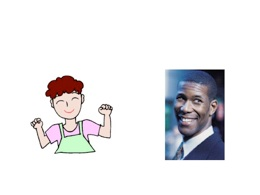
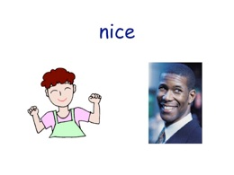
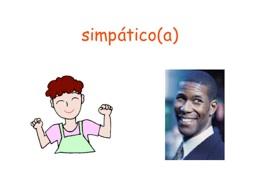
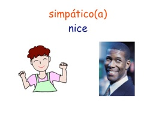
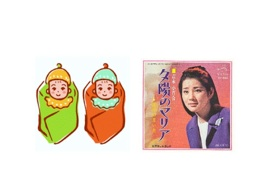
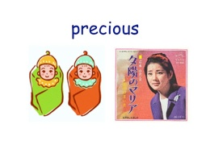
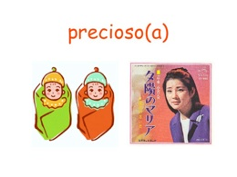
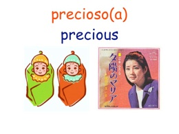

> • ここでは性格や外見といった人の属性を表す形容詞の使い方を学びます。 • 文の構造は英語と同様に［（主語）＋ 並置動詞 ＋ 形容詞 ］です。 • 英語の並置動詞は to be ですが、スペイン語の並置動詞には ser と estar があります。 • 属性を表す形容詞には、このうちの ser を使います。動詞 ser については こちら 。 • 形容詞は主語に合わせて、男性形・女性形、単数形・複数形を使い分けます。 • 形容詞の複数形は、母音で終わっていれば s を、子音で終わっていれば es を加えて作ります。 性格や外見といった人の属性を表す形容詞 Adjetivos para describir atributos personales como carácter y apariencia 性格を表す形容詞 スペイン語を表示したスライド、スペイン語と英語を同時に表示したスライド、英語のみのスライド、文字を表示していないスライドが用意してあります。語彙を覚えるのに使ってみましょう。 スライドをクリックするとムービーファイルが開きます。 人の外見を表す形容詞







